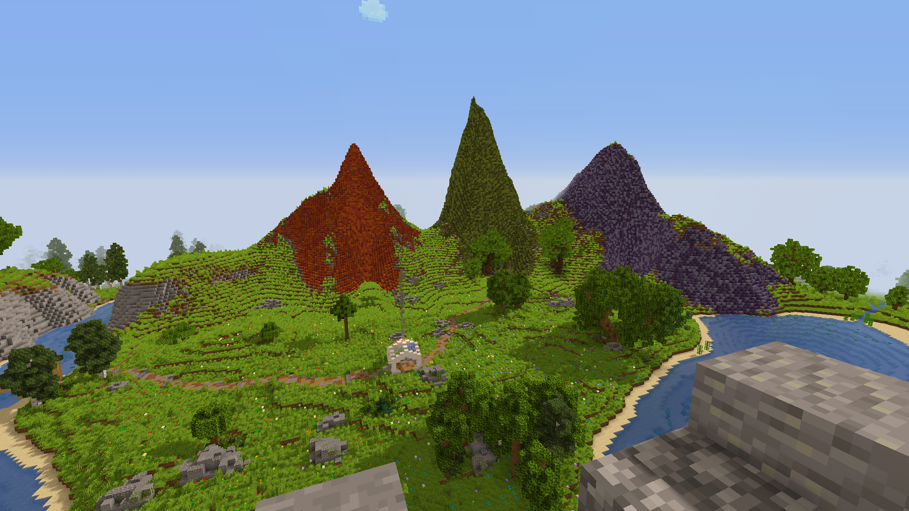

Добро пожаловать на сервер KsyCraft!
Перед заходом на сервер ОБЯЗАТЕЛЬНО ПРОЧИТАЙТЕ ПРАВИЛА, за нарушение которых последует наказание.

Что здесь есть?
Кастомные вещи
Уникальные предметы, разбросанные по всему миру для настоящих исследователей.
Красивый мир
Потрясающие ландшафты, которые компенсируют староватые пещеры и предлагают тонны контента.
Точки телепортации
Плагин на /tpa для удобного перемещения. Незаменимый функционал для одиночек!
Информация о сервере
- Версия: 1.20.1
- Ядро сервера: Purpur
- Ядро клиента: Fabric
- Тип: Пиратский (с регистрацией)
Рекомендации
- Перед заходом убедитесь, что ресурсы сервера включены
- Скачайте рекомендованные моды для лучшей работы
- Приносите найденные книги админу (Ksybet) для библиотеки
- Наслаждайтесь игрой и предлагайте улучшения!